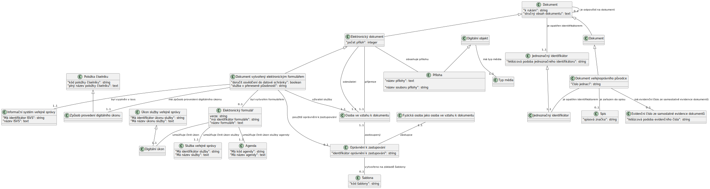

V této sekci jsou definovány veškeré koncepty, třídy a asociace, potřebné pro Dokument z formuláře pro elektronické podání.
Diagram konceptuálního modelu.
Informačním systémem veřejné správy funkční celek nebo jeho část zabezpečující cílevědomou a systematickou informační činnost pro účely výkonu veřejné správy nebo plnění jiných funkcí státu anebo dalších veřejnoprávních korporací. Každý informační systém veřejné správy zahrnuje data, která jsou uspořádána tak, aby bylo možné jejich zpracování a zpřístupnění, provozní údaje a dále technické a programové prostředky, případně jiné nástroje umožňující výkon informačních činností
Položka číselníku reprezentuje jednu přípustnou hodnotu datového prvku z množiny všech přípustných hodnot, které jsou kódovány číselníkem, do kterého položka patří.
Elektronické formuláře, které po prokázání totožnosti uživatele služby s využitím elektronické identifikace zajistí automatizované doplnění údajů nezbytných pro poskytnutí digitální služby vedených v základním registru nebo agendovém informačním systému, které jsou orgánu veřejné moci zpřístupněné pro výkon agendy, nebo využívaných orgánem veřejné moci na základě souhlasu uživatele služby.
Digitální objekt je objekt existující pouze v digitálním světě (např. databáze nebo datová sada) příp. se jedná o plně digitalizovaný objekt reálného světa (např. dokument, obrázek nebo kniha).
Určuje, o jaký typ digitálního objektu se jedná ve smyslu typu digitálního média a jeho konkrétního formátu (např. datový soubor, obrázek, video, audio, apod.).
Písemná, obrazová, zvuková nebo jiná zaznamenaná informace, ať již v podobě analogové či digitální, která byla vytvořena původcem nebo byla původci doručena
Číslo jednací obsahuje označení nebo zkratku označení veřejnoprávního původce, pořadové číslo zápisu dokumentu v základní evidenční pomůcce a označení určeného časového období, kterým je zpravidla kalendářní rok, popřípadě dále označení nebo zkratku označení organizační součásti veřejnoprávního původce nebo jiné znaky charakterizující skutečnosti související s dokumentem. Číslo jednací může být rovněž odvozeno ze spisové značky s uvedením pořadového čísla dokumentu ve spisu nebo čísla listu dokumentu ve spisu.
Veřejnoprávní původce přidělí dokumentu evidovanému v samostatné evidenci dokumentů evidenční číslo ze samostatné evidence dokumentů. Evidenční číslo ze samostatné evidence dokumentů musí splňovat alespoň podmínky stanovené pro jednoznačný identifikátor.
Digitálním úkonem je úkon vykonávaný uživatelem služby vůči orgánu veřejné moci v rámci agendy a vedený v katalogu služeb jako úkon v elektronické podobě.
Úkon představuje jednotnou a ucelenou interakci mezi klientem a OVM (úředníkem), která je realizována určeným obslužným kanálem na jednom OVM a která má právní následky. Pomocí úkonu či série úkonů klient usiluje o dosažení výstupu dané služby VS.
Podobně jako u služby se jedná o srozumitelný a výstižný název úkonu, aby bylo klientovi jasné, co je účelem úkonu. Název úkonu by měl výstižně popsat konkrétní krok (např. podání žádosti, výzva k doložení/doplnění žádosti, atd.).
Služba veřejné správy představuje funkci (činnost) úřadu, která je vědomě poskytnuta konkrétním OVM konkrétnímu příjemci služby podle příslušného právního předpisu tak, že přináší příjemci vnímanou hodnotu, ať už v podobě benefitu nebo splnění zákonné povinnosti. Evidují se pouze takové služby VS, během nichž dochází k interakci mezi OVM a klientem či naopak, nikoli k interakci mezi OVM a OVM. Na službu VS lze také pohlížet jako na dosažení práva či naplnění povinnosti klienta, které nelze splnit jinak než interakcí či sérií interakcí mezi klientem a OVM. Služba se dělí podle toho, zdali je iniciována klientem nebo vykonávaná z moci úřední. Každá služba se skládá z nejméně jednoho úkonu.
Název by měl klientovi stručně a jasně vystihnout, o jakou službu se jedná. Důležité je, aby byl nezaměnitelný s jinou službou, ale stále velmi jednoduchý, srozumitelný a zapamatovatelný. Měřítkem je, že název služby je používaný (bude používán) v běžném hovoru lidí.
Určuje, o jaký typ digitálního objektu se jedná ve smyslu typu digitálního média a jeho konkrétního formátu (např. datový soubor, obrázek, video, audio, apod.).
Referenčními údaji o právech a povinnostech osob jsou dále údaje o některých právech fyzických a právnických osob k zastupování jiných fyzických a právnických osob v rámci agendy orgánu veřejné moci (dále jen „oprávnění k zastupování“)
Specifikace struktury pro Dokument vytvořený elektronickým formulářem
Datová struktura pro Dokument vytvořený elektronickým formulářem.
Poděkování
Tato specifikace vznikla v pracovní skupině ve složení Jakub Klímek, Alice Binderová, Lenka Kováčová, Robert Piffl, Petr Tiller, Tomáš Šedivec a Jan Petr.